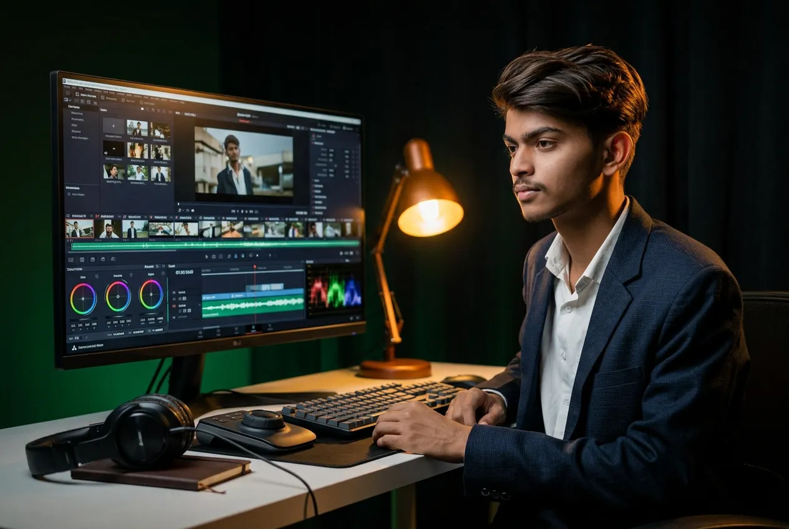
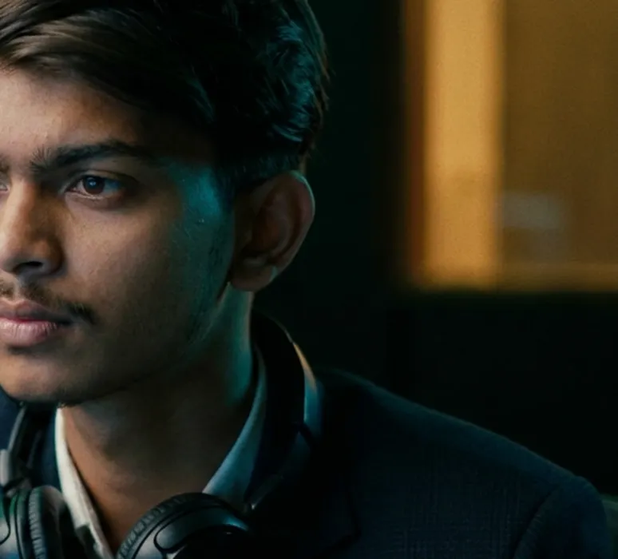
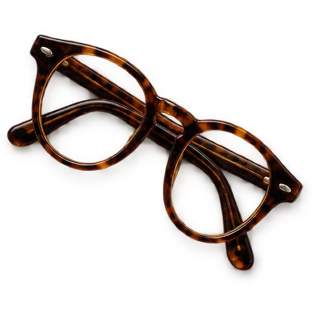

FORMEEVERYDAY. EXTRAORDINARY.
A NEW PERSPECTIVE ON EVERYDAYView projectFORME
A fashion film that moves like a lookbook.


I turn “raw footage” into
films people can’t scroll past.
A few cuts from the timeline.
Different briefs. Same curiosity.
A fashion film that moves like a lookbook.

Sound you can see. Cut to the beat.
A launch film that feels like a deep breath.
Scroll through the way I work.
What is this film really about? What can go? Which moment will people remember tomorrow?
Assemble the story, find the pace, and let an honest rough cut show you what still needs work.
A grade that carries the mood. Sound that lands every beat. Titles exactly where you need them.
Picture on V1, titles above, sound below. The familiar shape of an edit—and hundreds of small decisions that make the finished film feel effortless.


The timeline is
my favourite
storytelling tool.
Cutting commercials, brand films and social stories for ambitious teams.
FREELANCE · REMOTE / WORLDWIDETaking films from first assembly through colour, sound and final delivery.
EDIT · GRADE · FINISHFilm, photography and a healthy habit of asking “why this cut?”
WATCH. CUT. REPEAT.I go through every take before touching the timeline. The best moments are often hiding off-script.
Rough cuts, honest feedback and a structure that keeps people watching to the last frame.
Colour, sound and pacing refined together, then delivered clean and on time.
From the first rushes
to the final export.
Story-first edits for commercials, brand films and social. Pacing that keeps people watching and a structure that lands the message.
COMMERCIALS · BRAND FILMS · SOCIALA look that carries the mood. Balanced footage, consistent skin tones and a grade that makes the story feel like itself.
GRADE · LOOK DEV · DELIVERYGraphics that belong in the cut. Titles, lower thirds and animated details that explain without slowing things down.
TITLES · ANIMATION · OVERLAYSHalf the story. Dialogue clean-up, music edits, sound design and a mix that hits every beat of the picture.
DIALOGUE · MUSIC · SOUND DESIGNA few small experiments.
Go on, give them a try.
Same letters. A different rhythm.
Pick a colour. Set the mood.
Let’s make something worth watching.
Let’s talk hello@princeedits.comYour next great film